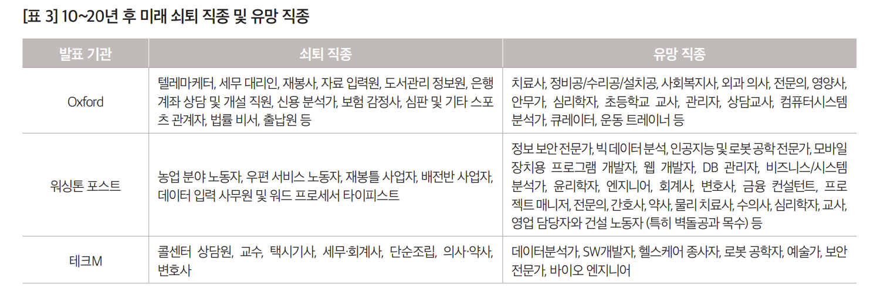

1hands-on
2025-10-22
실습주제1 – 코딩테스트
- 과거: 개념들을 배우고, 활용을 잘하면 코딩을 잘하는 것이다.
- 제 생각: 개념을 활용하여 코딩을 잘하는건 많은 연습과 센스가 필요했음.
개념1 – 숫자의 저장 및 계산
23개념2 – 문자의 저장 및 계산
'이재명대통령''이재명이재명''대통령대통령''이재명대통령이재명대통령'개념3 – 숫자의 문자화, 문자의 숫자화 (형태변환 )
20254050'2025''20252025'개념4 – replace (저장된 타입이 문자일 경우 쓸 수 있는 특별한 기능)
'abc''aBc'개념5 – 리스트 = “숫자, 문자를 여러개 남을 수 있는 그릇”
[1, 2, 'a', 3]24'aa'6개념6 – 리스트의 원소 추가
(예시1)
[1, 2, 'a', 3][1, 2, 'a', 3, 'b'](예시2)
[][1][1, 2](예시3)
[]아래의 코드를 3번실행해보자.
x에는 뭐가 있을까?
개념7 – for문 (리스트와 같은 iterable객체의 원소를 반복하여 호출하는 테크닉)
(예시1)
[1, 2, 'a', 3](예시2)
[2, 4, 'aa', 6]문제1 – yyyy/mm/dd 타입을 yyyy-mm-dd 타입으로 변환하기
아래와 같은 리스트가 있다.
['2022/09/21',
'2022/10/30',
'2022/12/25',
'2023/01/01',
'2023/01/31',
'2023/03/20']날짜를 아래와 같은 형식으로 바꾸는 코드를 제시하라.
['2022-09-21',
'2022-10-30',
'2022-12-25',
'2023-01-01',
'2023-01-31',
'2023-03-20'](풀이) – 해보세요
개념8 – 문자열들로 이루어진 리스트의 원소를 이어주는 테크닉 (join)
['2022', '01', '31']'2022-01-31''2022-01-31'개념9 – 문자열을 특정기호를 기준으로 분리하여 리스트로 만들기
(예시1)
'2022-01-31'['2022', '01', '31'](예시2)
'2022-01-31'['2022', '01', '31']'2022-01-31'문제2 – 기차만들기
아래의 특수문자를 이용하여
'■'다음과 같은 기차를 만들어보자.
'■-■-■-■-■---■-■-■-■-■---■-■-■-■-■'(풀이)
개념10 – 리스트안의 리스트 (원소로 리스트를 가지는 리스트)
[1, 2]12[3, 4, 5]345개념11 – 함수
3'aaa'문제3 – 2021 카카오 채용연계형 인턴쉽 기출문제
출처: https://school.programmers.co.kr/learn/courses/30/lessons/81301?language=ruby

네오와 프로도가 숫자놀이를 하고 있습니다. 네오가 프로도에게 숫자를 건넬때 일부 자릿수를 영단어로 바꾼 카드를 건네주면 프로도는 원래 숫자를 찾는게임입니다. 다음은 숫자의 일부 자릿수를 영단어로 바꾸는 예시입니다.
1478 --> "one4seveneight"
234567 --> "23four5six7"
10203 --> "1zerotwozero3"이렇게 숫자의 일부 자릿수가 영단어로 바뀌어졌거나, 혹은 바뀌지 않고 그대로인 문자열 s가 매개변수로 주어집니다. s가 의미하는 원래 숫자를 return 하도록 solution 함수를 완성해주세요.
참고로 각 숫자에 대응되는 영단어는 다음 표와 같습니다.
| 숫자 | 영단어 |
|---|---|
| 0 | zero |
| 1 | one |
| 2 | two |
| 3 | three |
| 4 | four |
| 5 | five |
| 6 | six |
| 7 | seven |
| 8 | eight |
| 9 | nine |
- 제한사항
- 1 ≤ s의 길이 ≤ 50
- s가 “zero” 또는 “0”으로 시작하는 경우는 주어지지 않습니다.
- return 값이 1 이상 2,000,000,000 이하의 정수가 되는 올바른 입력만 s로 주어집니다.
- 입출력 예
| s | result |
|---|---|
| “one4seveneight” | 1478 |
| “23four5six7” | 234567 |
| “2three45sixseven” | 234567 |
| “123” | 123 |
- 입출력 예 설명
- 입출력 예 #1 – 문제 예시와 같습니다.
- 입출력 예 #2 – 문제 예시와 같습니다.
- 입출력 예 #3 – “three”는 3, “six”는 6, “seven”은 7에 대응되기 때문에 정답은 입출력 예 #2와 같은 234567이 됩니다. 입출력 예 #2와 #3과 같이 같은 정답을 가리키는 문자열이 여러 가지가 나올 수 있습니다.
- 입출력 예 #4 – s에는 영단어로 바뀐 부분이 없습니다.
(풀이)
hint 아래의 리스트를 활용해보세요
[['zero', '0'],
['one', '1'],
['two', '2'],
['three', '3'],
['four', '4'],
['five', '5'],
['six', '6'],
['seven', '7'],
['eight', '8'],
['nine', '9']]실습주제2 – 코딩테스트의 위기
실습1 – ChatGPT를 켜고 “2021 카카오 채용연계형 인턴쉽 기출문제”를 풀어달라고 부탁해보자.
생각해볼점1 – 아래의 유튜브를 시청하고 (5:12 - 6:28 까지만 보면 됩니당) 본인의 생각을 정리해보자.
https://www.youtube.com/watch?v=VpOrYvq7ruk&t=434s
- 코딩테스트가 사라질까? (수능도 사라진다고 하는판에..)
- 그럼 향후에는 어떠한 사람이 인재일까? 프로그래밍을 공부하는건 혹시 주산을 공부하는 것과 같은 일인가?
생각해볼점2 – 반발
- https://brunch.co.kr/@23why/206 – 공부는 헛되지 않음, 프롬프트 작성 + 결과를 검토할 능력을 얻음
- https://asset200.tistory.com/4 – 오래된 정보(11), 환각(7)
실습2 – 세종대왕의 맥북프로 던짐 사건을 재현해보자.
- 맥북프로 던짐 사건 – 나무위키
- 기세등등 (인공지능 별것 아니잖아?) https://www.chosun.com/national/weekend/2023/03/04/HR457QM36JFTXDUVAMMNG23MHQ/
생각해볼점3 – GPT가 풀지 못하는 문제에 집중해야 할까?
- 인간은 GPT가 여전히 해결하지 못하는 문제를 찾아야 할까?
- 아니라면 GPT를 활용하는 방법을 알아야 할까?
제 생각 – 활용해야 합니다.
(옛날상식)

인공지능시대의 유망직종과 쇠퇴직종 <출처: 인공지능 기술 발전이 가져올 미래 사회 변화 (2015)>
(상식의무너짐)
http://www.aifnlife.co.kr/news/articleView.html?idxno=13100

복습 – AI시대에 LLM모형을 활용하는 올바른 프로그래머의 두 가지 선택
- 왼쪽길: AI에만 너무 의존할 수 없다. 기본적인 코딩교육은 필요하다는 입장.
- 오른쪽길: 순수하게 AI에만 의존해도 무방하다. (바이브코딩)
왼쪽길과 오른쪽길의 공통점: 최근 LLM 기술의 동향을 파악하는 것이 매우 중요